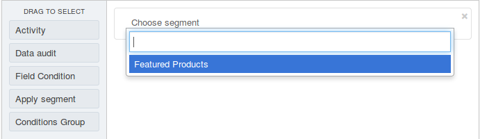
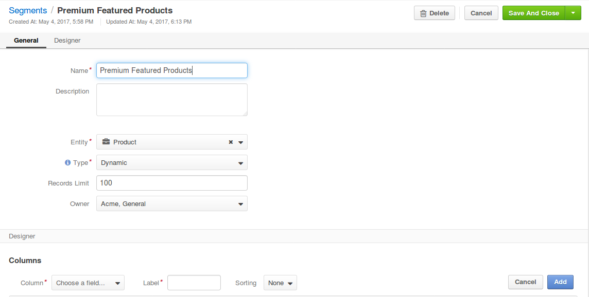

Segments¶
Segments are dynamically filtered subsets of the data (e.g. product collection, marketing list) in OroCommerce.
To use a set of records in reports, filters, web catalog nodes or marketing lists, you can create a segment and reuse it instead of copying the same query as a condition.
Segment combines a set of records filtered using the query that may use the following information as the foundation:
- Activity
- Data audit
- Field Condition
- Segment
- Condition Group
Dynamic segments refresh automatically. Segments of manual type require explicit refresh by clicking Refresh .
In this section you will learn how to:
Create Segments¶
To create a new segment:
Navigate to Reports & Segments > Manage Segments in the main menu.
Click Create Segment.
The Create Segment page emerges.
In the General Details:
- Fill in the segment name.
- Optionally, add a Description to help you and other users to understand the purpose or peculiarities of the segment in the future.
- Select the main entity that segment should look up.
- Select the segment type from the list. Dynamic segments are updated as soon as any changes have taken place in the system. Manual segments are updated only following the manual refresh action when viewing the segment details.
- Optionally, specify the records limit. The segment shows the first X results in case the limit is provided.
- Select the segment owner - a business unit, members of which can manage the segment, subject to the roles defined in the system.
In the Designer > Columns section, define the set of the fields of the entity records to be shown in the segment.

In order to add a column to the grid:
- Choose a field from the drop-down in the Column section.
- Type in a label to refer to the field in the segment report on the interface. The field label is used by default. Customize it if necessary.
- Define the sorting order for at least one column in the segment to sort the resulting data set by the field value.
- Click Add button.
- Reorder the columns by clicking on the line and dragging it to the necessary location.
In order to manage the columns, use action icons in the last column:
- Delete a column from the segment with .
- Edit the column settings with .
- Change the column position, dragging the column by the icon.
In the Designer > Filters section, define the filter to select the records for the segment.
Click Save.
Refresh Manual Segment¶
To refresh the data in the segment of the manual type:
- Navigate to Reports & Segments > Manage Segments in the main menu.
- Click on the necessary segment line.
- Click Refresh .
View a Segment Filtered Records¶
To view the records selected using the segment filter:
- Navigate to Reports & Segments > Manage Segments in the main menu.
- Click on the necessary segment line.